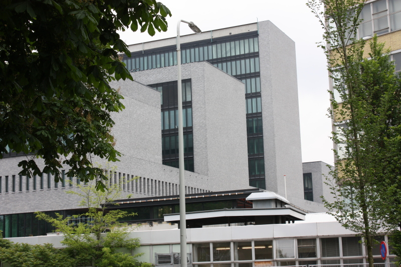

Operação europeia apreende mais de cem servidores de rede de fraude com investimentos e detém sete suspeitos

Imagem de arquivoUma operação coordenada na terça-feira, 3 de novembro, em seis países resultou na detenção de sete suspeitos e na apreensão de mais de cem servidores ligados a uma rede de burlas com falsas plataformas de investimento. A ação, dirigida pelo Ministério Público alemão de Itzehoe, contou com o apoio da Europol e da Eurojust e envolveu autoridades da Alemanha, Albânia, Chipre, Finlândia, Kosovo e Macedónia do Norte, onde foram feitas buscas em 17 locais.
Segundo a Europol, o alvo principal foi uma empresa suspeita de fornecer a grupos criminosos sites de negociação fraudulentos, usados por centros de chamadas que pressionavam as vítimas a entregar as poupanças. Os investigadores estimam prejuízos acima de quatro milhões de euros e potenciais vítimas em pelo menos 50 países. De acordo com a Bitdefender, a empresa operaria a partir de Chipre e de Israel e os centros de chamadas estariam na Albânia, no Kosovo e na Macedónia do Norte.
A investigação começou em 2022, depois de um casal alemão não ter conseguido levantar dinheiro de uma plataforma de negociação online, e já tinha levado a detenções nesse ano e em 2025. Os sete detidos agora podem vir a ser extraditados ou entregues à Alemanha. Além dos servidores, foram apreendidas provas digitais e outros bens.
Fontes: Europol (comunicado, 3–4 nov.), Bitdefender HotForSecurity (5 nov.)
Confirmado por duas fontes independentes. A Bitdefender baseia-se sobretudo no comunicado da Europol; os pormenores sobre Chipre/Israel e o historial da investigação vêm da Bitdefender. O comunicado não indica o nome da operação nem a participação de Portugal.


.jpg){kind=link}


.jpg){kind=link}